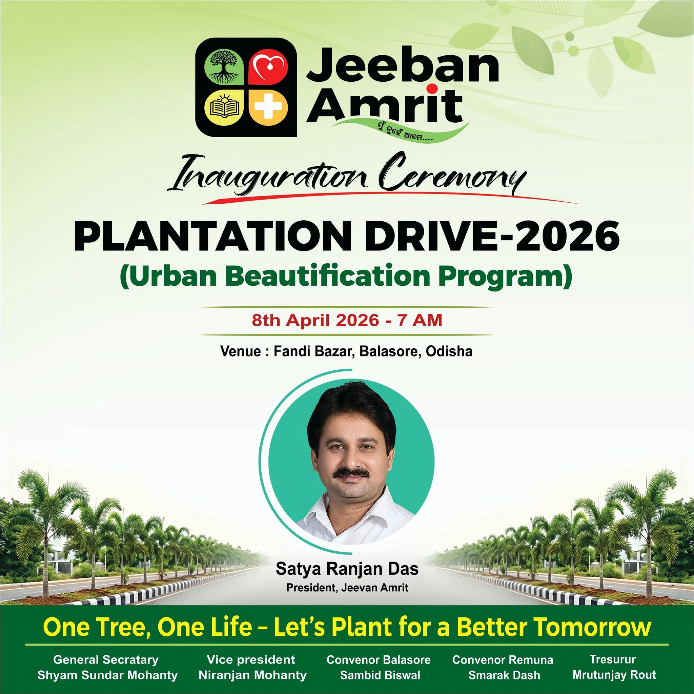

Inauguration Ceremony
- Date: 8 April 2026
- Time: 7:00 AM
- Venue: Fandi Bazar, Balasore, Odisha
- Program: Urban Beautification Program
Presented as part of Jeeban Amrit’s Urban Beautification Program, this initiative reflects the organisation’s belief that greener surroundings create healthier, more hopeful communities.

Plantation is not only about planting trees. It is about strengthening public spaces, improving urban beauty, and creating a more livable environment for the community.
Well-planned plantation improves the character and visual quality of streets and public areas.
Trees support cleaner air, shade, ecological balance, and a healthier future.
Public participation helps protect, sustain, and celebrate shared urban spaces.
Every plantation effort can become part of a larger movement toward better living conditions.
President, Jeeban Amrit
The Plantation Drive 2026 poster places this initiative under the leadership of Satya Ranjan Das, reflecting the organisation’s emphasis on visible service and public engagement at the local level.